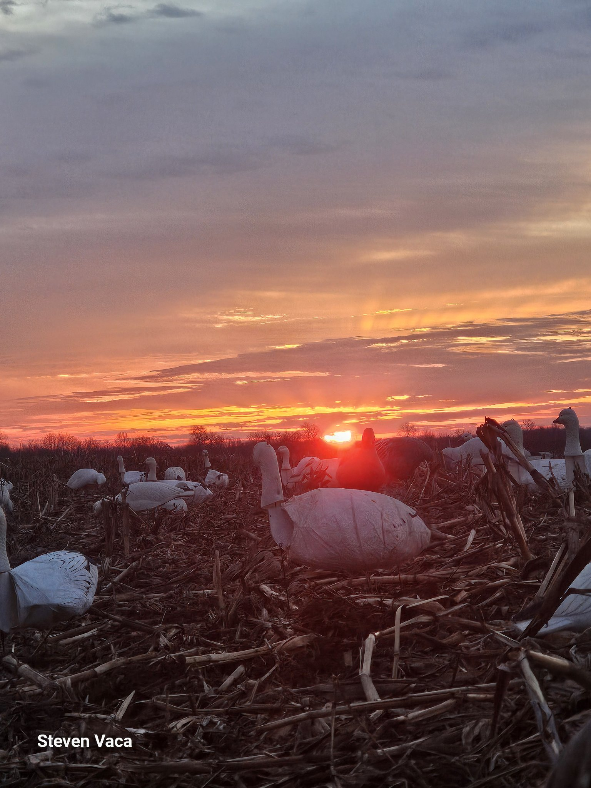
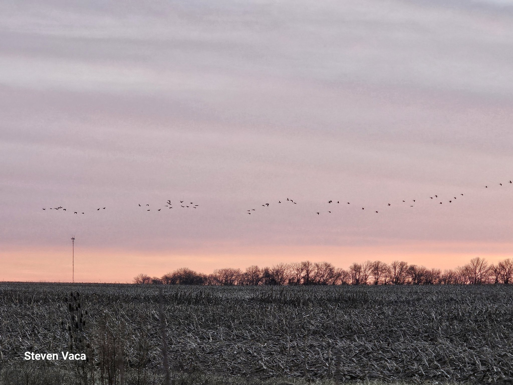
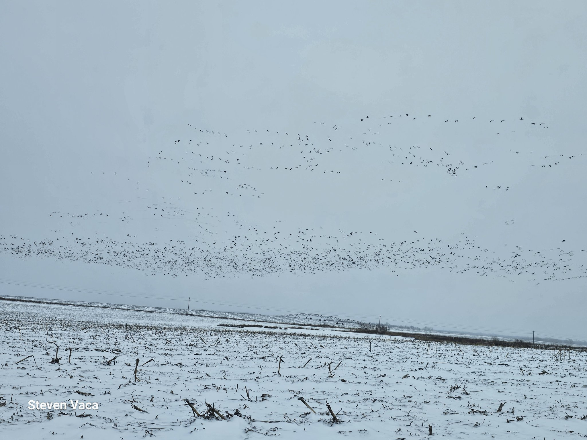

Returning veterans to the outdoors. Rebuilding connection through fellowship.
Native Prairie Veterans Foundation provides fully funded outdoor fellowship programs for veterans, active-duty service members, and Gold Star families — through hunting, conservation, and community connection.
Our mission
Fully funded outdoor hunting and conservation experiences for veterans, active-duty service members, and Gold Star families — creating opportunities for connection, conservation, and shared experiences outdoors.
Outdoor fellowships
Guided hunting and outdoor experiences at no cost to participants — removing barriers so those who served can simply show up.
Conservation
Hands-on habitat and prairie stewardship work that gives back to the land that hosts us.
Community
Fellowship before, during, and after every outing — because connection is the point.
From the field



Photos by Steven Vaca.
Where your donation goes
Every dollar supports fully funded outdoor fellowships. Verified program costs:
covers one veteran's fully funded hunt day
covers a veteran's hunt weekend
covers a full 4-hunter hunt day
Online donations are processed through Zeffy, which states that 100% of the donation goes to the mission.